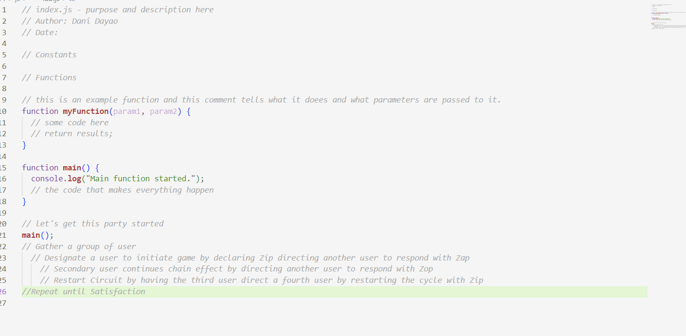

Lab 4 - Pseudocoding and Problem-solving
Challenge
The challenge of this lab is to learn JavaScript without actually coding. Instead we are meant to think of steps like a programmer.
Problems
The problems which occured for this lab was figuring how to format everything properly, which included the words and the pictures.
Reflection
My partner and I need to set aside more time to work on these labs. We are definitely beginning to understand things, we just need more time to troubleshoot things. We also know that if we set aside more time, we would be able to make our website cuter.
Results

Shown above is an image of my JavaScript!
Pseudocode for Making Rice
// Pseudocode for an everyday task
// Task: Cooking Rice!
1. Obtain Rice
2. Obtain Rice Cooker
3. Obtain measuring cups
4. Make sure you have electricity
5. Measure the amount of rice you want
a. for a single person, 1 to 2 cups will do!
6. Pour rice into Rice Cooker pot
7. Wash the rice in the pot at your sink
a. Wash until water is clear
8. Measure the water using the lines on your finger
a. The ratio should be 1:1
9. Cook and wait
10. Enjoy!

How to Play: Zip, Zap, Zop!
1. Gather a group of players
2. Designate a user to initiate game by declaring Zip
directing another user to respond with Zap
3. Secondary user continues chain effect by directing
another user to respond with Zop
4. Restart Circuit by having the third user direct a
fourth user by restarting the cycle with Zip
5. Repeat until Satisfaction